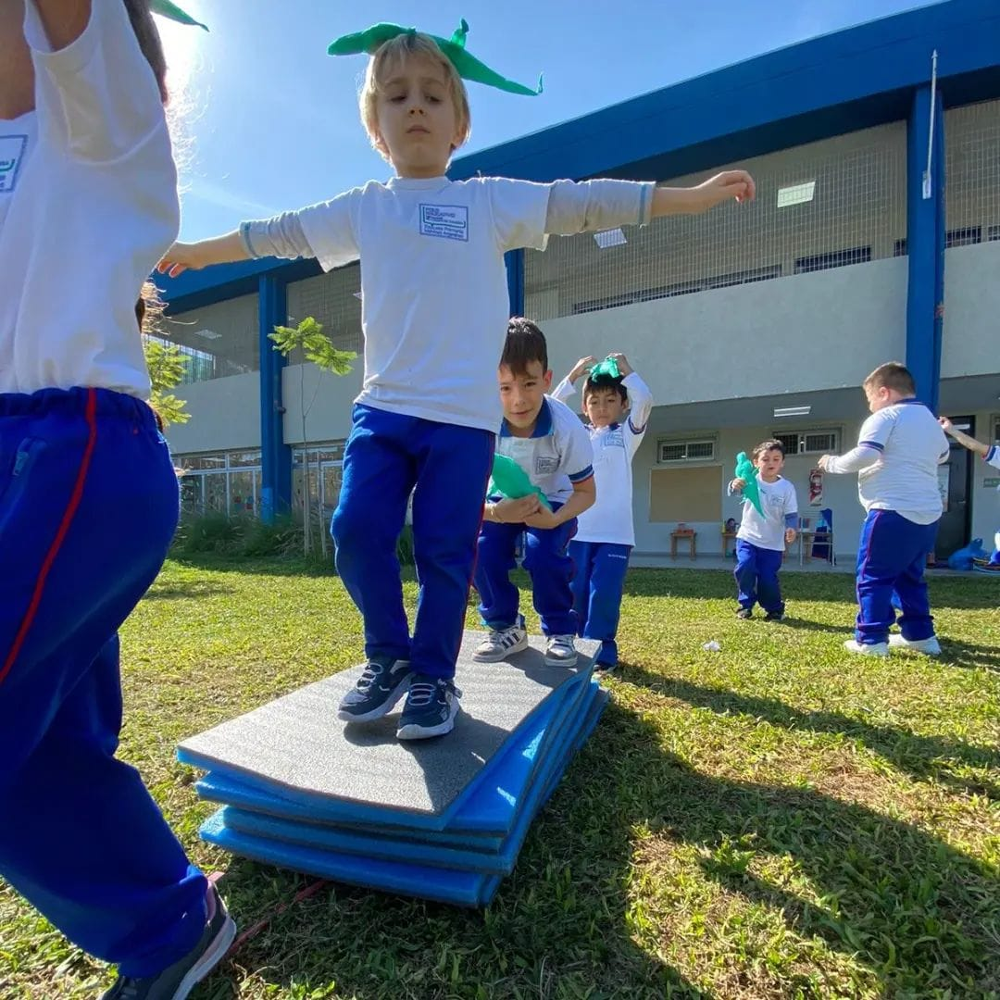
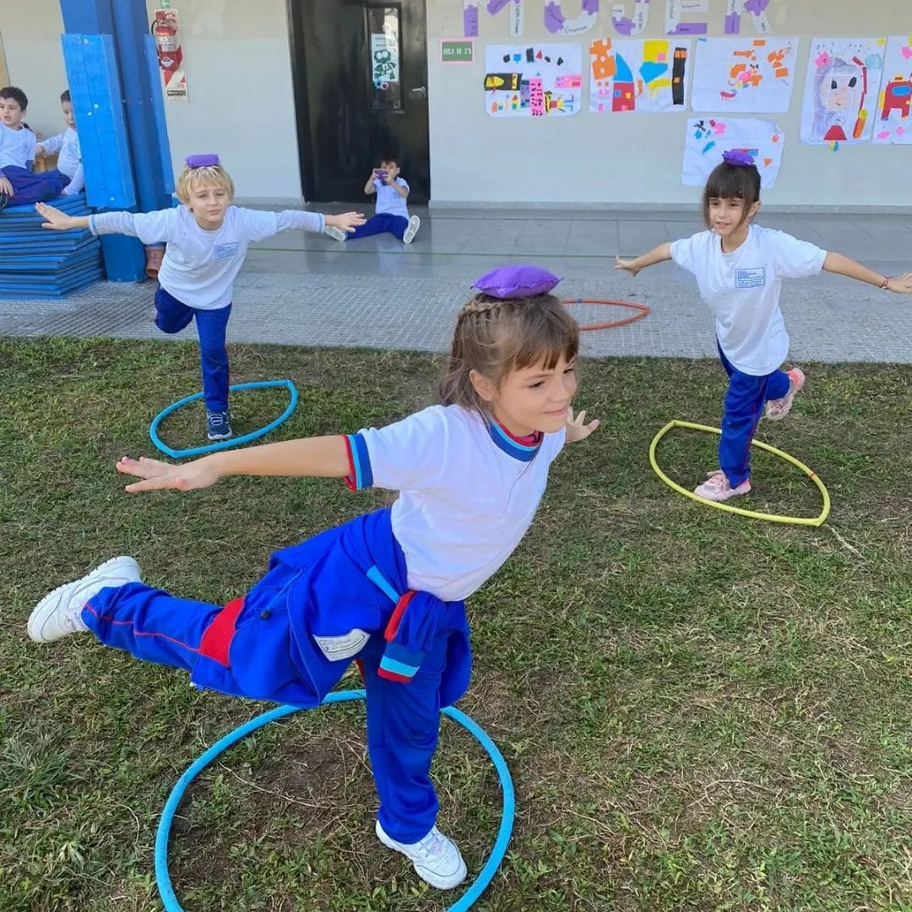
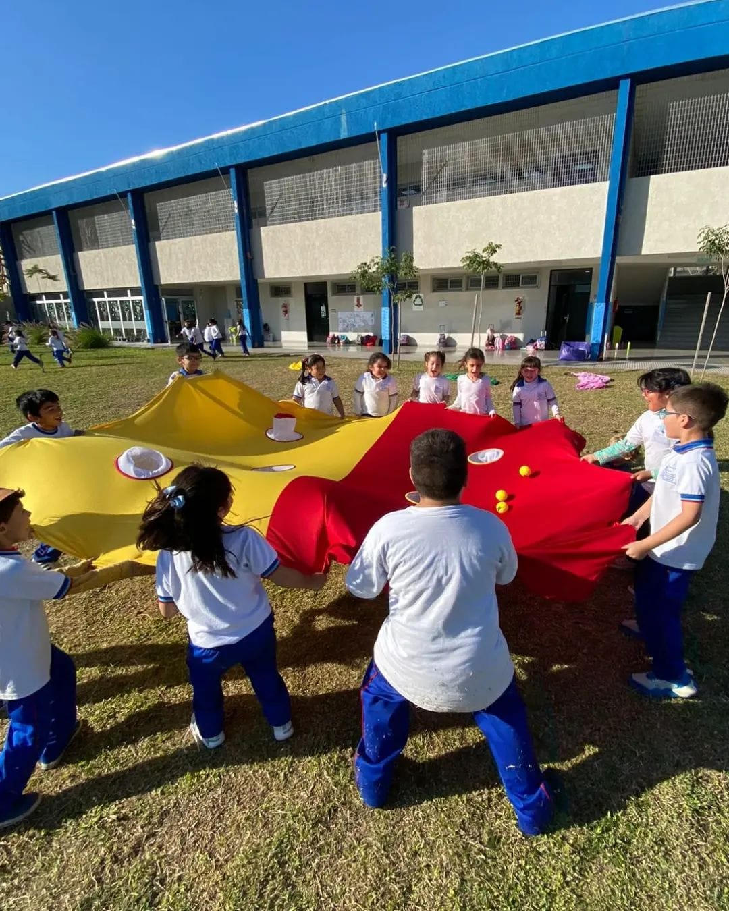
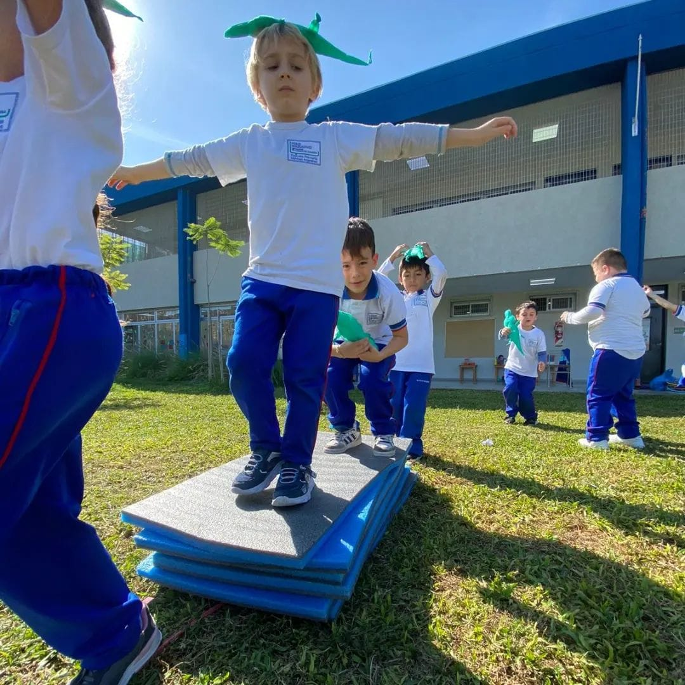
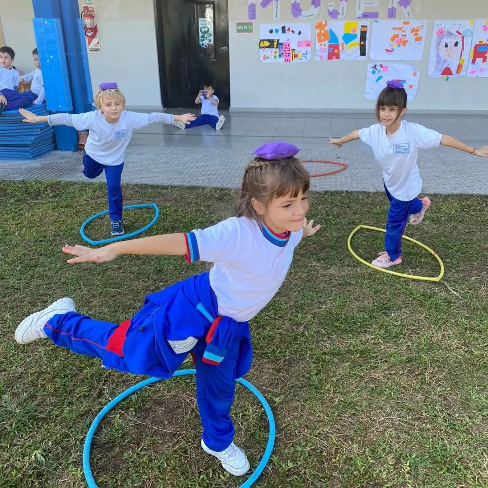
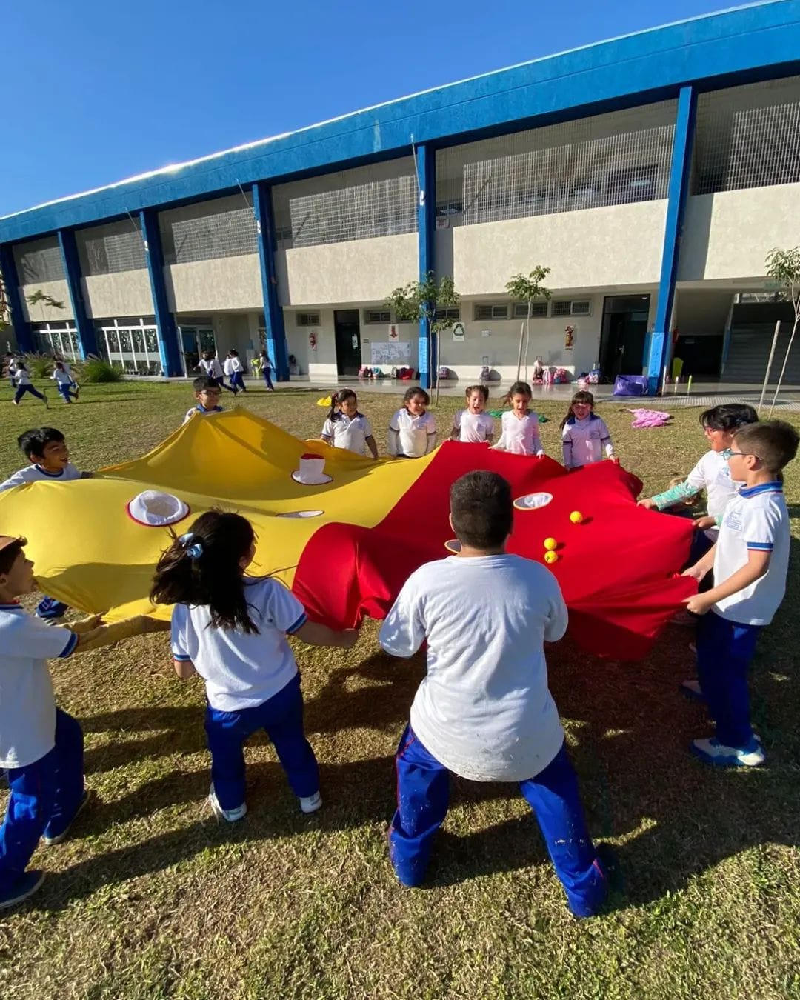

Inglés
Nuestro programa de Inmersión Diaria en Inglés ofrece a los niños y las niñas la oportunidad de sumergirse en el idioma todos los días. A través de actividades lúdicas, juegos y conversaciones guiadas, los niños no solo aprenden vocabulario y gramática, sino que también desarrollan confianza para comunicarse en inglés. Esta experiencia diaria crea una base sólida para un futuro dominio del idioma, preparando a los niños y las niñas para alcanzar un nivel avanzado a medida que crecen. ¡Cada día es una nueva aventura lingüística que impulsa su habilidad y amor por el inglés!
Teatro
Este programa de exploración teatral sumerge a los niños y las niñas en el emocionante mundo del teatro, estimulando su imaginación y creatividad. A través de juegos, improvisaciones y pequeñas representaciones, los niños y las niñas no solo aprenden habilidades escénicas, sino que también desarrollan confianza, habilidades sociales y empatía. En este ambiente lúdico, los niños Y las niñas se convierten en personajes, exploran diferentes emociones y se sumergen en narrativas cautivadoras, todo mientras descubren la magia del teatro.
TICs
Este emocionante programa de Exploración Tecnológica introduce a los niños y las niñas en el mundo de las tecnologías de manera divertida y educativa. A través de actividades interactivas adaptadas para su edad, los niños y las niñas aprenderán sobre computadoras, software educativo, y cómo utilizar dispositivos de manera creativa y segura. Desde juegos educativos hasta actividades prácticas con dispositivos táctiles, este taller estimula la curiosidad y fomenta habilidades digitales fundamentales en un ambiente amigable y enriquecedor.
Ambiente
Nuestro Taller de Ambiente para niños y niñas es un espacio emocionante donde los pequeños exploradores descubren el fascinante mundo que les rodea. A través de actividades prácticas, juegos interactivos y emocionantes excursiones, los niños y las niñas aprenden sobre la naturaleza, la importancia de la conservación y cómo cuidar nuestro planeta. Desde la plantación de árboles hasta la observación de vida silvestre, los niños se convierten en guardianes del medio ambiente, desarrollando un amor duradero por la naturaleza. Este taller no solo enseña conocimientos ecológicos, sino que también fomenta la responsabilidad y el respeto por nuestro entorno, cultivando así futuros defensores del medio ambiente.
Artes Plasticas
Artes Plásticas para niños y niñas es un vibrante espacio donde los jóvenes artistas pueden dejar volar su imaginación. Más allá de simplemente pintar o dibujar, los niños se sumergen en un mundo de posibilidades creativas. Desde la escultura y la cerámica hasta el collage y la impresión, los niños y las niñas exploran diversas técnicas artísticas. Este taller no solo desarrolla habilidades técnicas, sino también la capacidad de ver el mundo desde múltiples perspectivas. Cada semana es una nueva aventura, donde los niños descubren el arte en sus muchas formas, cultivando así una apreciación profunda por la diversidad artística y su propia creatividad única.
Musica
Nuestro Taller de Música para niños y niñas es un viaje emocionante a través del universo musical, diseñado para despertar la pasión por el arte sonoro en los jóvenes corazones. Aquí, los niños exploran una amplia variedad de instrumentos, desde la guitarra y el piano hasta la percusión y los instrumentos étnicos. Además de aprender a tocar, los niños se sumergen en el mundo de la composición, la improvisación y el canto coral. Este taller no solo se trata de leer partituras, sino también de sentir la música en su esencia. Los niños descubren diferentes géneros musicales, experimentan con tecnología musical y participan en actividades de grupo que fomentan el trabajo en equipo y la armonía colectiva. Así, cada niño encuentra su propio ritmo y estilo, desarrollando habilidades musicales y un amor perdurable por el arte sonoro en todas sus formas.
Campamentismo
Un taller de campamentismo para niños es una experiencia educativa y divertida diseñada para enseñar a los niños y las niñas habilidades prácticas y conocimientos relacionados con el camping y la vida al aire libre. En este taller, los niños y las niñas aprenden habilidades esenciales como montar una tienda de campaña, encender una fogata de forma segura, cocinar al aire libre, identificar plantas y animales, orientarse usando brújulas y mapas, y cómo comportarse de manera responsable en la naturaleza. Además de las habilidades prácticas, los talleres de campamentismo fomentan el trabajo en equipo, la confianza en sí mismos y el amor por la naturaleza, proporcionando a los niños y niñas una experiencia enriquecedora y memorable en el entorno natural.
 





Inclusion al Deporte
Está actividad esta diseñada para que todos los niños y niñas, sin importar sus habilidades, puedan disfrutar del mundo del deporte. A través de actividades adaptadas y enfocadas en la inclusión, los niños aprenden habilidades físicas, valores de trabajo en equipo y autoconfianza. Este espacio seguro y positivo fomenta la amistad, la empatía y el respeto mutuo, permitiendo que cada niño y niña se sienta valorado y capaz, mientras participa activamente en diversas actividades deportivas.